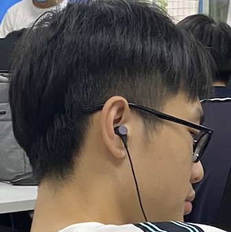

梁又文
男 | 20岁 | 前端开发工程师 | 广州
手机：15011756892 | 微信：gdgzyw | 邮箱：layouwen@gmail.com
项目经历
-
Art Time - 艺术时间
源码链接 项目预览这是一个基于 Rails 和 Vue 的多页面应用。
主要功能包括微信登录、手机验证、直播、点播、反盗版、答题系统、课程管理系统等。 从数据库设计到前端展示，都是由我主导，另有两名前端辅助我。
该系统大幅提高教学效率，优化教学流程，受到公司和用户的好评。
-
Auto Taiji - JS太极图
源码私有 项目预览一个基于 React / TypeScript 的移动端单页面应用。
这是我从自己的需求出发，设计出的极简记账应用，特点是快速记账， 而且可以通过图表查看自己的消费习惯。
该项目大量使用 React Hooks，让我对 Hooks 有了深刻的理解和应用。
-
YJ Nav - 艺简导航页
源码私有 项目预览一个基于 React / TypeScript 的移动端单页面应用。
这是我从自己的需求出发，设计出的极简记账应用，特点是快速记账， 而且可以通过图表查看自己的消费习惯。
该项目大量使用 React Hooks，让我对 Hooks 有了深刻的理解和应用。
-
GETC Students - GETC学生论坛
源码私有 项目预览一个基于 React / TypeScript 的移动端单页面应用。
这是我从自己的需求出发，设计出的极简记账应用，特点是快速记账， 而且可以通过图表查看自己的消费习惯。
该项目大量使用 React Hooks，让我对 Hooks 有了深刻的理解和应用。
技能
- 熟悉页面制作技巧，能将设计稿完美还原
- 熟悉前后端分离技术，包括 AJAX、跨域、前端路由、Cookie、Session 等
- 熟练掌握 Vue全家桶的使用，包括 VueCli、VueRouter、Vuex 等
- 熟练掌握 React全家桶的使用，包括 create-react-app、ReactRouter、Redux 等
- 熟悉 ES6，包括 let / Promise / await / 析构赋值
- 了解 TypeScript 的使用，我的项目就是 TS 实现的
- 了解 Webpack 的配置和优化
开源项目
工作经历
-
XX公司
前端工程师实习生（Vue+JS）
~- 独立负责 iPad 客户端的后台 Rails 开发和前端开发工作
- 负责团队基础库开发、单元测试、文档撰写，确保测试覆盖率达到 90% 以上
- 作为前端骨干，负责给前端较弱的同事进行培训，提高其前端开发工作效率
其他链接
教育经历
~ 广州市机电技师学院 专科